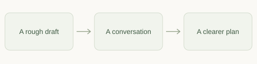

Point to it
A heading, an image, a button, a whole section. Start with the thing you want to discuss.
A shared plan becomes useful when every question has a place to land. Comment on the words, the design, or the space between them.
Discuss what matters, then let your agent bring the next version back here.
A heading, an image, a button, a whole section. Start with the thing you want to discuss.
Ask a question, reply with an idea, or resolve the conversation when you are ready.
Your agent receives the context behind each comment. You keep the final decision.

Images and layout areas can have conversations too.
Right-click a color or the surrounding space to leave design feedback.